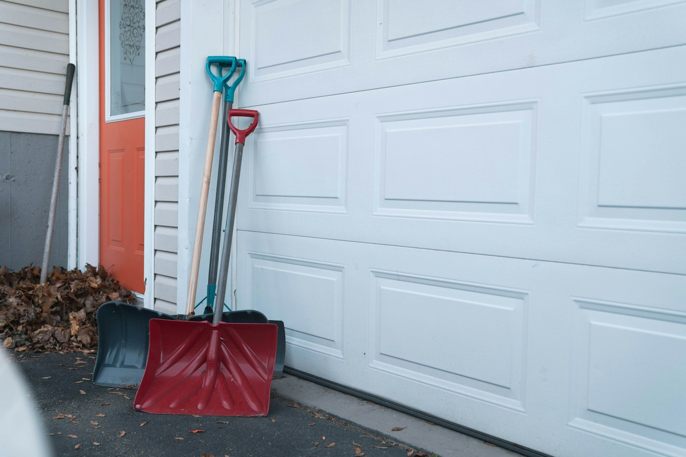
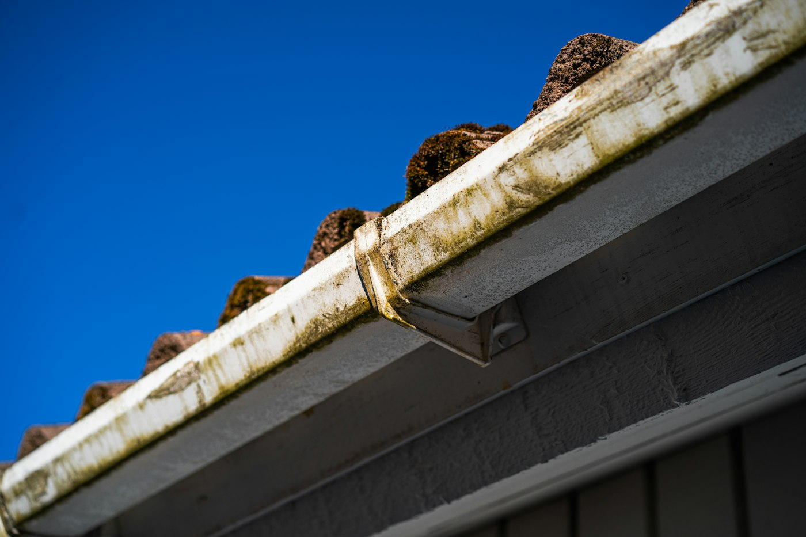

Huerkamp Home Group
Free guide
What to do the week you move in, before your first Minnesota winter, and all through your first year.
Free guide for new Twin Cities homeowners
Congratulations on your new home. The first year is when you learn how the house works, and when a little attention prevents the most expensive problems.
Work through this checklist season by season. Keep the receipts and notes in one folder: they help with warranties, insurance claims and, someday, selling. Questions? Call or text us at (612) 502-7653.
The first week
Rekey or replace exterior locks and change garage door and keypad codes. You don't know how many keys are out there.
Learn where the main water shut-off, gas shut-off and electrical panel are, and label the breakers. In an emergency, minutes matter.
Minnesota law requires working carbon monoxide alarms within 10 feet of every sleeping room. Test every alarm, replace batteries and replace alarms past their expiration date.
Apply with your county assessor for homestead classification; it can lower your property taxes. Apply by December 15 for it to count the next year.
Keep the closing papers, inspection report, warranties, manuals and paint colors together, paper or digital.
Before your first winter
Have the furnace cleaned and checked, and change the filter on the schedule its maker recommends. Keep a few spare filters on hand.
Disconnect hoses, close the inside shut-off valves to outdoor faucets and drain them so they don't freeze and burst.
Clear leaves after they fall and make sure downspouts carry water well away from the foundation.

Icicles and ice ridges at the roof edge can mean heat is escaping into the attic. Attic insulation and ventilation are the long-term fix; ask a roofer or insulation contractor.
Many cities have winter parking rules, snow emergency routes and sidewalk clearing rules. Check your city's website before the first storm.
Spring and summer
If you have one, pour water into the pit to make sure it turns on and drains outside, before the spring melt and rains.
Soil should slope away from the foundation. Fill low spots so water doesn't pool against the house.
Clean around the outdoor unit and have it serviced so it is ready for the first hot week.
Clean the lint out of the dryer duct and outside vent; lint buildup is a fire risk.
All year
The Minnesota Department of Health estimates about 2 in 5 Minnesota homes have radon levels that pose a significant health risk. Test kits are inexpensive; test the lowest lived-in level.
Minnesota property taxes are paid in two halves, generally due May 15 and October 15. If your lender pays them from an escrow account, check your annual escrow statement.
Make sure your coverage reflects the cost to rebuild, and ask about water backup coverage, which many policies leave out.
Set aside money each month for maintenance and repairs, so a new water heater or roof repair doesn't go on a credit card.
Records of improvements can add to your home's tax basis when you sell. Keep them with your closing papers.
Ready when you are
Huerkamp Home Group has helped buyers and sellers across the Twin Cities since 2002, and has been a Dave Ramsey Endorsed Local Provider for more than 15 years.
Sources
Photos: Erik Mclean (cover), Shutter Speed and Aleksi Partanen on Unsplash. General information, not legal, tax or lending advice. Rules and programs change; confirm details with your lender, title company, tax adviser or attorney. Huerkamp Home Group is a team of licensed REALTORS® with Keller Williams Preferred Realty. Equal Housing Opportunity.